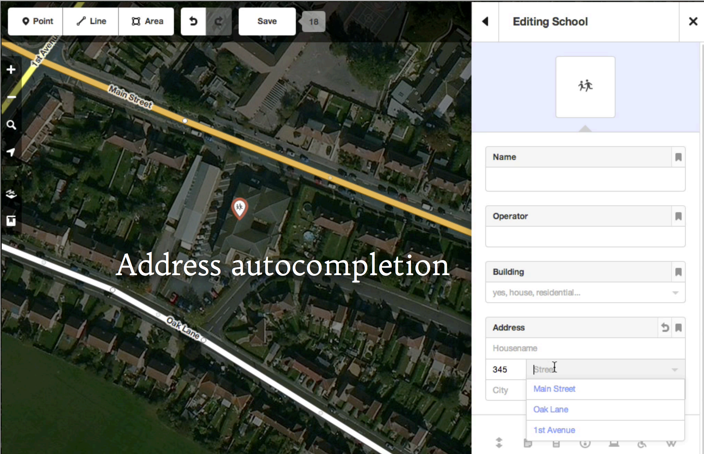
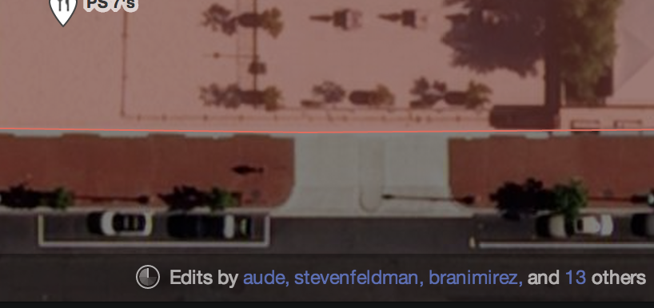
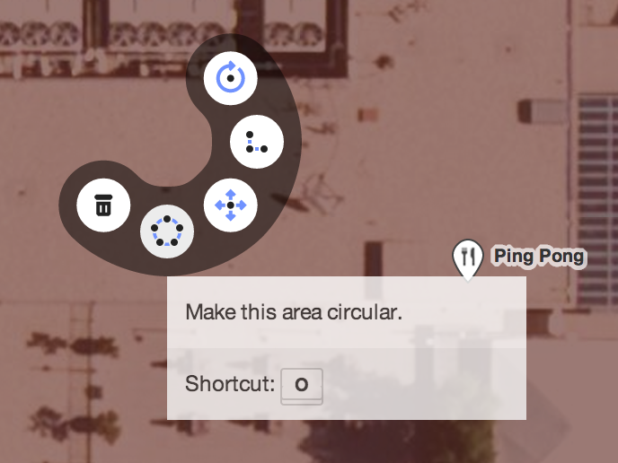
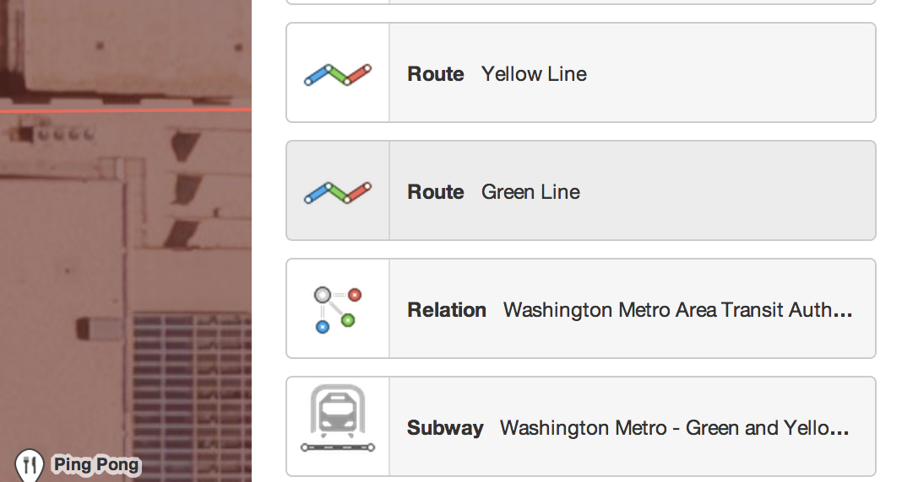
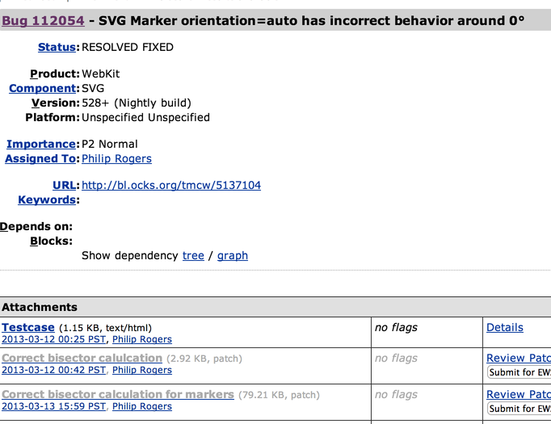

Hi
iD
a new editor
bit.ly/id-sotmus
github.com /systemed/iD
(demo)

'the invisible interface'

 GPX
GPX
❤ taginfo


a pure-javascript, complete map editor for OpenStreetMap
designed to be easy to learn and simple to use
iD is designed for 90% of OSM users

Designed for This
pure-JavaScript
Rendering with SVG and thinking with d3
Even OAuth is done in JS
pure-JavaScript
JavaScript is contributable and has a bright future
'Contributable'
meaning people know JavaScript
meaning you can clone the repo and start developing
meaning we need you
to help us help you
because you know things we don't
Design
designed from day one.
icons,
cursors, colors: from scratch & developed
inline with code
design matters in so many ways
iD needs to seem legit
The Goal
Replace Potlatch 2 as the default editor on OpenStreetMap
for Internet Explorer 10+
Convert more new users to editing members
Enable a new generation of OSM tools through reusable code
Progress
v0.x
the basic skeleton
v1.0
presets, details, documentation, translations
v1.1
relations & performance
v1.2
perfect
Performance
non-trivial
Chrome & Safari
Opera
Firefox
Browser vendors are helping!

Here's to bug trackers!
Low-hanging-performance fruit is mostly eaten
❤ chrome & firefox
Not Next
'JOSM patterns'
Warning Dialogs Everywhere
→ Next
Default (obviously)
Docs
Notes Integration
Modularity
var id = require('id');
// write another editor
var id = require('id');
// write another editor
// share implementations
// of hard parts
*already happened a little
osm-auth, ohauth, togeojson, d3.keybinding, d3.typeahead, locale.js
d3.curtain.js
Plugins
Chat, Conflation, Imagery Alignment, Turn Restriction
Editing, Projections, Local Datasets
You tell me?
thanks! / ideditor.com